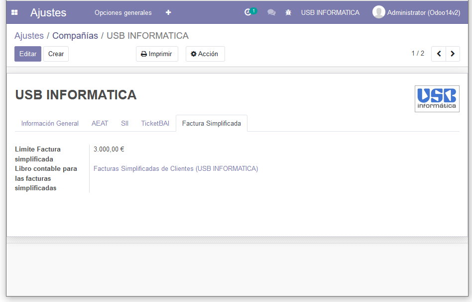
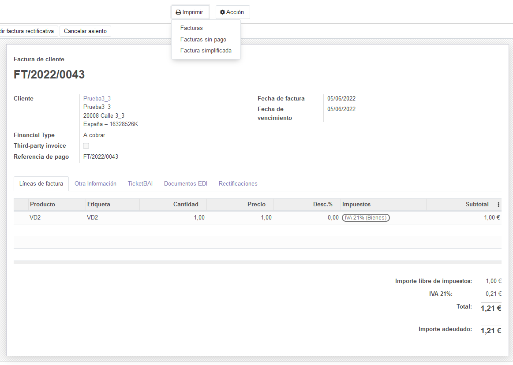
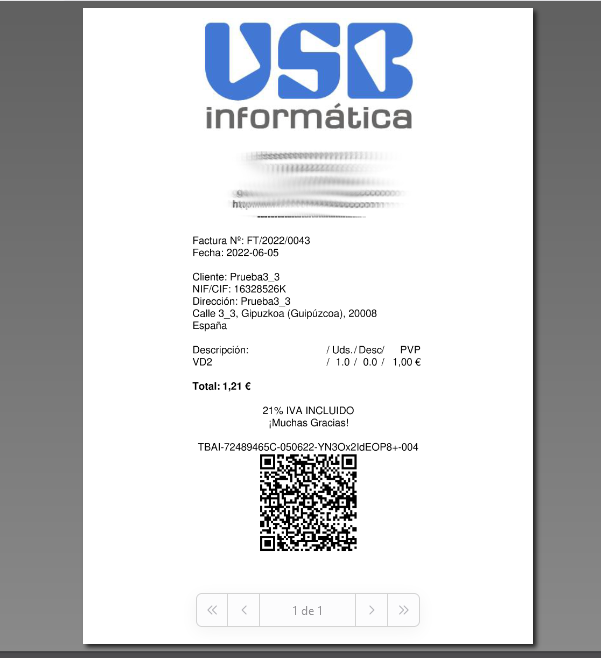

Modulo que adapta los modulos de ticketbai (l10n_es_ticketbai_api y l10n_es_ticketbai) que puedes encontrar en https://github.com/OCA/l10n-spain/ para que puedas crear y rectificar facturas simplificadas desde la pantalla de Facturacion/Contabilidad (Account.move) y que se envien automaticamente a los servidores de TBAI.
Al Crear una factura se comprueba si el cliente es anónimo y si tiene DNI/CIF. En ese caso se crea una factura simplificada en vez de una normal.
El modulo da error al crear una factura simplificada si no tienes configurada la secuencia de facturas "normales" o si toca regenerarla, por ejemplo al cambiar de mes o año. Puedes solucionar este inconveniente simplemente generando una factura "normal".


